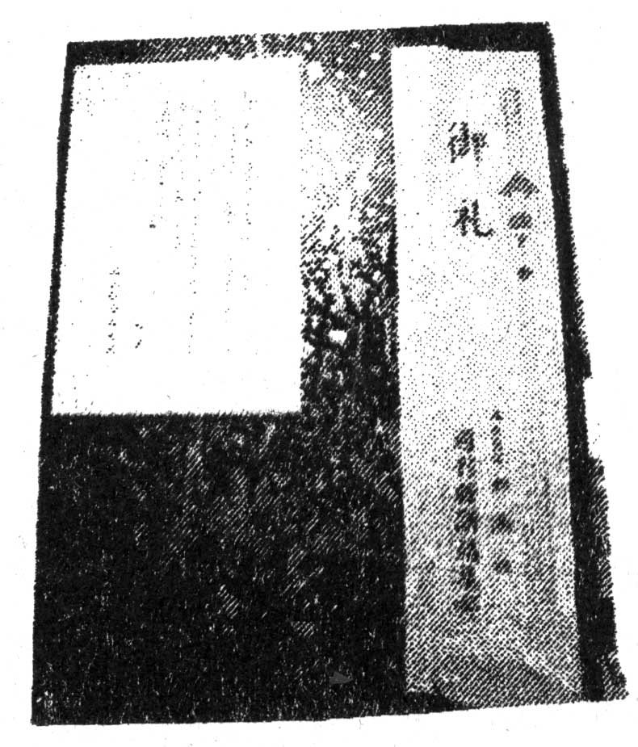

🏠
日
月
縦書き／横書き
06 年３月31 日（金）〜４月１日（土）、桜を眺めて酔っ払ってなんか燃やして寝るという、ｍｉｘｉ野宿野郎コミュニティー初オフ会兼４号完成野宿兼４号押し売り野宿兼その他もろもろひっくるめたなにがなんだかよく判らない「お花見野宿」が多摩川で開催される。すんごい寒い。が、10 人ほどの野宿参加者さんのうち女性５名と今だかつてないない桃色野宿。
４月29 日（土）、『野宿野郎』を便乗して売るため、「古本の野宿本（のようなもの）」をぼちぼち引っさげ、不忍ブックストリートの春の一箱古本市に一箱出店。
お花見野宿参加者のフナ氏が事前に売り込みを行ってくれたため「古書ほうろう」さんがめでたく『野宿野郎』取扱店さんとなる。フナ氏、千駄木界隈売り込み係さんに就任。
大阪府のＭＭ氏より、５月19 日は、→５の19 の日→「Ｇｏ！ 野宿の日」ではないのか、野宿しなくていいのか、とのご指摘を頂き、ＭＭ氏をご指摘係さんに任命。06 年より、５月19 日は「Ｇｏ！ 野宿の日」として「野宿野郎的祭日」に制定される。野宿野郎のみなさん、また野宿しないとならない日が増えましたよ。
ＭＭ氏の発言を受け、この日「野宿学会」では「野宿会議in 井の頭公園」を決行（会議録・本誌５号Ｐ64 ）。大雨。
会長（60 才）は率先し、屋根付きの音楽堂へと２ｍほどある柵を乗り越え侵入。快適な野宿を行う。明け方雨が上がり、野宿に気がつかない学生が音楽堂の前でたまる。（肉の）はなまさ行かね？ はなまさって安くね？（学生談）
５月29 日（月）、ＨＰ製作係伝道師氏家出。「探さないで下さい。」とのメールが野宿野郎関係者にいっせい送信されるも、誰も探してあげない。ＨＰ更新滞る。
４号での「なにか」強化募集のお知らせに「旅する本屋 放浪書房」とみー氏が応募。打ち合わせ係、飛んで火に入る夏の虫とばかりに、ためしに「打ち合わせ野宿」決行。とみー氏希望通り「神出鬼没の販売特約店」兼「美人でも東大卒でもない怪しいメガネの広報担当」に就任。とみー氏はいいひと。
６月12 日（月）、製作係「５号作り始めます」と力強く宣言。編集部は「今後野宿ＬＯＶＥのトレンドは終わり、一転硬派な野宿が来る」と大予想。５号の特集のようなものを「駅寝ってどうよ？」とする。嗚呼、硬派なり。
６月14 日（水）、進行係より「５号原稿の第一回公式〆切のようなもの」が強気に７月20 日（木）と発表される。
６月18 日（日）〜19 日（月）、のじゅくの日野宿、代々木公園某テント村にお邪魔して開催される!! （詳しい報告は本誌５号Ｐ68 。報告係大将氏）
18 日はワールドカップ日本対クロアチア戦の日。それがどうしたと強がる一同を尻目に、ミニコミ誌「にやにや笑う」編集長下地氏、こっそりパブリックビューに試合を見に行き、一人にやにや。世紀の瞬間（のじゅくの日を迎える瞬間）に間に合わない。
７月10 日（月）、かとう『小説すばる（９月号） 』さんの特集「このリトルマガジンがすごい！」内で「野宿野郎編集部」の取材を受ける。その際、野宿野郎には編集部などないではないか、ということが露呈してしまい、悲しい。以降かとう「野宿野郎編集部リアル化計画」を進めることを心に誓う。また、この取材により『野宿野郎』発刊の理由は「仕事を始めてあんまり野宿できなくなったから。うっぷん晴らし」に決定。
小説すばるさん、ありがとうございました。おすすめに挙げてくださったタコシェさん山崎まどかさんもありがとうございました。
７月28 日（金）〜29 （土）、「野宿バーin 銀座東（東銀座じゃない）」、銀座からどちらかといったら築地、というか築地、に移動して隅田川沿いにて開店。
９月18 日（月）〜19 日（火）、のじゅくの日野宿、高尾山山頂で強行される!! （報告いろいろ、本誌５号Ｐ１００、報告者気が向いた皆さん）
勢いでこの野宿より以降毎回、「のじゅキング」を決めていくこととなる。栄えある第一回「のじゅキング」、ふじもと氏に決定。受賞のコメントは「はあ......光栄です」。他、「金八野宿」話で盛り上がり大将氏金八野宿係さんに就任。実りある野宿であった。
10 月１日（日）、伝道師氏突如「インターネット直売所」を製作。オープン一ヶ月で前年のネットからの年商を上回る事態に。発送係、発送するものが同じでもしっかりしたページがあるだけで売れるということが判然とし、なんでも見てくれが大事である、ということが判明、なにかがおかしいと思う。替わって長くネット売りあげ最大手だった「旅の本屋のまど」さんの売りあげ激減。
10 月３日（火）、伝道師氏、もちお氏、かとうが下北沢の食べ放題に集まり、ひたすら食べる。かとう以後２人を公式に編集部の人間とする、と宣言。この会議では、編集会議はメンドウクサイのでもうやるのは止めようということが決まる。他にはたらこちゃんはネブクロくんに似かよっているのでキューピーを訴えよう 。たらこちゃんに色を塗ってネブクロくんとして売り出そう、とかいうことが話し合われる。
ぼちぼちと雑誌などに取り上げられたため、編集部てんぐとなる。が、５号製作はなかなか進まず。なぜなら製作していないから。恐ろしい。
取り上げてくだすったみなさま、どうもありがとうございました。
10 月20 日（金）、かとう遅々とも進めていない５号製作、こみあげる孤独、つみあがる赤字、将来の不安などに思い悩み、先輩旅コミ誌「旅の雑誌 」さんに相談。まんまと夕飯をおごってもらう。その際、今まで旅の雑誌さんの下にあった「一番下っ端（年下）の旅コミ誌」の称号を譲り受け、めでたくも「野宿野郎」は一番下っ端旅コミ誌に!!
10 月28 日（土）〜29 （日）、ついに青春緊急企画として「金八野宿」金八先生ロケ地・荒川土手で決行される!!
第二回「のじゅキング」は深夜伝道師氏のチャリに乗って買い出しに行ったところ警察に捕まり警察署に連行されるも、焚き火などをしており見つかるとまずい状態だった野宿地の場所をわらなかった田村氏に決定。田村氏の受賞コメントは「カツ丼食べたかった......」。
田村氏はえらいので５号さんに変身することに!! （本誌５号表紙参照）
〈金八野宿係大将氏のコメント〉
まず個人的に、主催たるわたくしがあまりにも早く到着していたため、初々しい気持ちを失ったまま野宿に入ったことには今もって遺憾の思いを隠すことができません。しかし現場には偶然にも焚火のできる状態が確保されていた事、思いのほか参加者に恵まれた事など、喜びの材料もまた多く、制服を着用して来られなかった生徒も見られましたが、今後努力いたしまして全生徒の制服着用、給食の完全実施に向けて回を重ねていきたい所存であります。サンキュー！
10 月某日、50 代からの男の本音マガジン『ノジュール ２００６年11 月号（創刊号）』が創刊された模様（書店売りなし。注文のみ）。「50 代からの『自分ライフ』を格好よく！」がキャッチコピーの謎の雑誌。本音野宿。野宿ライフ。団塊の世代も野宿に目覚めたらしい。
11 月４日（土）、「野宿野郎編集部内野宿野郎図工部係」宛に「野宿はしおき 」届く。そこで「野宿野郎」に、急遽「図工係」ができ、スバラシイ送り主おが太氏、図工部部長さんに就任。
11 月10 日（金）『ＢＥ︲ＰＡＬ 12 月号 』に野宿野郎がちょろっと紹介される。タイトルはなぜだか「２００７年の野宿界のトレンドはずばり『新聞紙』ですよ！」。というわけで07 年の野宿トレンドは公式に新聞紙ということになりました。
恐るべし『ＢＥ︲ＰＡＬ』さん効果。びっくりするくらい目に見えて一時売れるが、いろいろ在庫切れとなり、絶好のビジネスチャンスを逃す。
お財布係４号の（つづいて他の号も）増刷決心。本職が校正者の第一回のじゅキングことふじもと氏、３日かけて４号を隅から隅まで読み、校正してくれるも、あんまりあるんで編集・お直し係、直すのがメンドウクサクなって半分も直さずに印刷所に!!
11 月12 日（日）、文学フリマに参加!! 「野宿野郎」は文芸誌だということをみなさまに知らしめる。
11 月29 日（水）、伝道係伝道師氏、メールマガジンの発行を突如として決意。伝道師という名前に負けない一連の伝道活動に、栄えある「野宿野郎 ｏｆ ｔｈｅ ｙｅａｒ ２００６（よく働いたで賞）」を受賞。
風の噂により、『現代用語の基礎知識 』に「野宿野郎」という単語が載っていることが判明。「野宿野郎」は現代用語だったのだ。えっへん。まいったか。
12 月吉日、やっとこさ５号入稿。１０８ページという増ページに印刷代がかさみ、貯金がなくなったお財布係「もう持ち出しはしない!! 」と泣きながら宣言。６号は５号が売れてくれないと出せないという、恐ろしい事態に。「読まなくてもいいから買ってください」と編集部。５号、読むことではなく買うことに意義のある珍しい一冊となる。
12 月12 日（火）、編集部一同、井の頭公園にて営業野宿。「野宿野郎による野宿野郎のための野宿会議（仮）」という企画野宿に参加する。企画・編集者松浦氏は自身も寒い中野宿してくれたスバラシイ人。
また、この野宿には世界一周ライダー・謎のアフロ男アフロ氏が電飾アフロヅラを持って乱入。わけの判らない野宿に。「オスカー」の「のじゅキング」に対し、「ラジー賞」の位置付け「へたれのじゅキング」の称号までえる。起床時の「もー無理。寒い」発言、世界を野宿してきた身とは思えない撤収時の手際の悪さが受賞理由。
松浦氏、以後この企画野宿の話に一切触れず。
12 月23 日（土）、あの地平線会議 内に「野宿党」を結党!! 党首はあの植村直己冒険賞受賞の冒険野郎・安東浩正氏という豪華さ。しかし党の活動は２次会後、酔っぱらうと帰るのがメンドウクサイし、飲み足りないからもっと飲んだり野宿しちゃおうというもので、しょうもないのだった。
コミケ係の怠惰で冬のコミケには申し込みせず。だって申し込みってけっこうメンドウなんだもん。そこで、スバラシイ「旅の雑誌」さんに委託してもらい「５号」20 冊おひろめ販売。
予想通り、あるはあるは誤字脱字。予想外のミスも、あるはあるは。
〈『週刊新潮』さんより菓子折り届く!! 〉
〈遂に５号届く!! 〉
遂に５号到着。ダンボール７箱分。編集部、足の踏み場もなくなる。搬入係、搬入作業で腰を痛める。在庫管理係、「もうダンボール箱は見るのもイヤだ!! 」
突然!!
のじゅミシュラン!!
てゆうか、じつは「のじゅミシュラン」潜入リポートは失敗だったのです。店内のどこを探しても『野宿野郎』が見当たらなかったので、店のおねいさんに聞きました。
もち： 『野宿野郎』ってありますか？
模索： あー、在庫きらしちゃってたかも。
棚をごそごそ探すおねいさん。
模索： スミマセーン。いま在庫ないですねー。なくなりそうだから注文しなくちゃって思いながら忘れちゃってました。取り寄せましょうか？
と、親切な対応をしてくれるおねいさんの優しさに僕はこらえきれず......。
もち： いえいえ、いいんです。じつは僕......。編集長から在庫がどんな状況かみて来いって指令を受けてきたのです。
模索： もしかして、部員の方？
もち： あ、そうなんです。でもこれ「のじゅミシュラン」て企画で、お店の方にはバレないようにナイショで偵察しなくちゃいけない企画なんです。だけど僕、だまってられなかって。エへへ、だめ部員ですねえ。編集長に叱られちゃいますねえ。
模索： アハ、編集長にはナイショにしといてあげますよ。在庫ってあるんですか？
もち： ええ、なんかコミケ合わせでこんなに刷っちゃって大丈夫なのかってくらい大量に刷ったみたいです。既刊はもう納品されてるみたいだから、すぐにお届けできると思います。あと最新号の５号がやっと出来あがるんですけど、コミケあわせ納品で１月中旬頃になっちやうみたいです。
模索： じゃあ注文しなくちゃ。だいじょーぶ、編集長にはナイショにしときますから。
もち： ありがとーございます。
果たして、この任務遂行が成功であったのか失敗であったのかは微妙だなーと思いながら、店を出ようと踵を返したところ、ひと呼吸あけて背中から声がかかりました。
模索： あ、そうそう。忘年会があるんですよ。
そういって、毎年恒例だという忘年会のチラシを笑顔（←ちょーステキな）で手渡してくれるおねいさん。絶妙なユルさで描かれた猫のイラストがあるそのチラシの一行に目が止まりまして。
もち： 赤汁ってなんですか？
うひひ、とおねいさんは怪しげな笑み（←でもちょーカワイイ）を浮かべながら答えてくれました。
模索： 私がつくるトマトスープです。
おねいさんの笑顔。おねいさんの赤汁。僕が恋におちた瞬間でありました。スバラシイっ！ スバラシすぎる！ スバラシや模索舎！ スバラシやおねいさん!!
模索舎さんは、どこからどうみても三ツ星本屋さんです。
大将： 野宿野郎ありますか？
古書： （少し探してから）すみません、無いですね。
大将： 結構売れてるんですねぇ、捌けちゃうなんて。
古書： そう、ポンポンポーンとねえ。
大将： どんな人買ってくんすかね。
古書： まあ本好き......。
大将： 野宿好きは？
古書： それで買う人も少ないでしょ。
大将： しかし野宿テーマでいつまで持つんでしょうね？
古書： ......うーん、似た中身でも熱心に買う人いるしね。
大将： 面白いです？
古書： まあ他に無いし、貴重な本だよね。
大将： いやまったくね。ハハハ。
つうわけで結構人気あるみたいよ。よかったね
って、ことで、古書ほうろうさんはとってもスバラシイ古書ほうろうさんです。はやく納品に行かなくっちゃ。（編）
ごめんなさい。タコシェに行く暇が無くてなんとかミシュランできてません。いつまで？ もうだめ？ お詫びに寝袋写真を送ります。
そんなわけですがモチロンきっと、タコシェさんはスバラシイタコシェさんでしょう。
そして松浦さんは寝袋アート写真家さんだったのだっ！
スバラシイ『野宿野郎』取り扱い店さんにこっそり潜入し、「野宿野郎」はどんなもんかお客のふりして聞いてみよう!!
スバラシイ取り扱い店さんはやっぱりスバラシイのか!?
もちろん、なんだってもースバラシイ!! ってことで引き続き他店さんののじゅミシュラン係大募集中でーす。
求む顔の知られていない人!! 脱、人見知り!!
豪華わら半紙
安東さんのＨＰ「荒野のサイクリスト」やっぱりヘッセ!!
http://www.tim.hi-ho.ne.jp/andow/
この本は、生前の高田渡さんに紹介していただいた本です。
リンゲルナッツはドイツのライプチヒ出身のドイツの国民的詩人。
学校をとびだして、放浪生活にはいる。船乗りになって世界をまわったり、いろいろな職業を転々したり、最後はミュンヘンのキャバレーで専属詩人となって、その後詩人として生きていこうとする。その自由な生き方は、まさにボヘミアン。
おしっこもらしたりする詩や、惨めなんだけどどこか明るい詩は山之口貘さんの詩に通じるところがあります。
時間がないということなので、それこそ思いつきでスミマセンが、次の３冊などはいかがでしょうか。
●ギャリー・ロス『象と逃げた男
』新潮文庫
３冊とも以前に読んだきりなので、正確には、野宿のシーンは出てこないかもしれません。（でも、どれも面白いです）
むしろ、そのままズバリなのは、山之口貘の詩ですよね。「生活の柄 」、高田渡も好きですが、ジャズの板橋文夫がピアノで弾くのを聴くと、ついつい泣けてしまいます。
♪歩き疲れては 夜空と陸とのすきまにもぐり込んで 草に埋もれては 寝たのです ところかまわず 寝たのです......
豆本も売ってまーす。 http://horoshobo.com
第三位！
愛犬との死別シーンは涙チョチョ切れッス!!
第二位!!
失業寸前の漫画家稼業、失踪、逃亡、自殺未遂、森の生活、路上生活、ノイローゼ、鬱、アルコール中毒、とまあ、悲惨極まりない内容を笑って吹き飛ばすようなユーモアとノボーンとしたタッチで読ませる傑作まんが。
この本に著名な賞をぽんぽこ贈っちゃうあたりにこの国の素敵な未来が見えるね☆
栄光の第一位は......？
本や映画であまりに印象が強いと、そのシーンが自分の経験のように記憶に残り、ふとした時にデジャぶったりするんだけど、この本はその塊。
野宿野郎読者は必読!!
Ｑ 野宿（のようなもの）って何でしょう？
Ｑ で、判りましたか？
賀曽利親分の著書は数あれど、今は絶版だけど１９７８年に10 万円で日本一周ツーリングした本が味と人生の重みがあって最高でした。
なぜかと言うと、カソリさんが家庭を持つようになり、旅人生をこのまま続けるか、それともやめようかという人生の瀬戸際に立たされた時に、意を決して全財産10 万円をかき集めて極限の完全野宿旅を決行したからです。
第三回不忍ブックストリート
（07
年４・29
号）
2006年12月末日発行
のじゅ編通信 号外2号
2007年4月29日発行
© 2006-2018 Chiaki KATO, Nojukuyaro
．
| のじゅ編通信 第二号 (野宿野郎デジタル) | |
| かとうちあき | |
| Nojukuyaro Publishing (2016) | |
のじゅ編通信 第二号 目次

〜ドキュメント・ザ・５号完成までの道〜
のじゅ編通信 ２号
限定大部数折り込み!! 豪華わら半紙!!
４号→５号が出来上がるまでの９ヶ月半、野宿野郎編集部もろもろは一体全体なにをしていたのか?!
みなさまの極小疑問に勝手にお答えする通信!!
来たれ!!
のじゅ編!!
作れ作れー、『野宿野郎』!!
いろいろお花見野宿開催!!
06 年３月31 日（金）〜４月１日（土）、桜を眺めて酔っ払ってなんか燃やして寝るという、ｍｉｘｉ野宿野郎コミュニティー初オフ会兼４号完成野宿兼４号押し売り野宿兼その他もろもろひっくるめたなにがなんだかよく判らない「お花見野宿」が多摩川で開催される。すんごい寒い。が、10 人ほどの野宿参加者さんのうち女性５名と今だかつてないない桃色野宿。
「春の一箱古本市」に一箱出店!!
４月29 日（土）、『野宿野郎』を便乗して売るため、「古本の野宿本（のようなもの）」をぼちぼち引っさげ、不忍ブックストリートの春の一箱古本市に一箱出店。
お花見野宿参加者のフナ氏が事前に売り込みを行ってくれたため「古書ほうろう」さんがめでたく『野宿野郎』取扱店さんとなる。フナ氏、千駄木界隈売り込み係さんに就任。
のじゅ編号外でる。
野宿本ってなんなんだ?!
５月19 日、「Ｇｏ！ 野宿の日」に制定!!
大阪府のＭＭ氏より、５月19 日は、→５の19 の日→「Ｇｏ！ 野宿の日」ではないのか、野宿しなくていいのか、とのご指摘を頂き、ＭＭ氏をご指摘係さんに任命。06 年より、５月19 日は「Ｇｏ！ 野宿の日」として「野宿野郎的祭日」に制定される。野宿野郎のみなさん、また野宿しないとならない日が増えましたよ。
ＭＭ氏の発言を受け、この日「野宿学会」では「野宿会議in 井の頭公園」を決行（会議録・本誌５号Ｐ64 ）。大雨。
会長（60 才）は率先し、屋根付きの音楽堂へと２ｍほどある柵を乗り越え侵入。快適な野宿を行う。明け方雨が上がり、野宿に気がつかない学生が音楽堂の前でたまる。（肉の）はなまさ行かね？ はなまさって安くね？（学生談）
お花見の写真ふん失!!
柵を乗り越える会長だ!!
伝道師氏、家出する!!
５月29 日（月）、ＨＰ製作係伝道師氏家出。「探さないで下さい。」とのメールが野宿野郎関係者にいっせい送信されるも、誰も探してあげない。ＨＰ更新滞る。
「野宿野郎」では打ち合わせなどはすべて野宿しながら行うことに独断と英断!!
４号での「なにか」強化募集のお知らせに「旅する本屋 放浪書房」とみー氏が応募。打ち合わせ係、飛んで火に入る夏の虫とばかりに、ためしに「打ち合わせ野宿」決行。とみー氏希望通り「神出鬼没の販売特約店」兼「美人でも東大卒でもない怪しいメガネの広報担当」に就任。とみー氏はいいひと。
もう、愛なんていらねえよ、野宿。５号製作宣言!!
６月12 日（月）、製作係「５号作り始めます」と力強く宣言。編集部は「今後野宿ＬＯＶＥのトレンドは終わり、一転硬派な野宿が来る」と大予想。５号の特集のようなものを「駅寝ってどうよ？」とする。嗚呼、硬派なり。
つづいて「５号原稿の第一回公式〆切のようなもの」発表!!
６月14 日（水）、進行係より「５号原稿の第一回公式〆切のようなもの」が強気に７月20 日（木）と発表される。
第三回「のじゅくの日」野宿大会、ワールドカップ対クロアチア戦に対抗し開催!!
６月18 日（日）〜19 日（月）、のじゅくの日野宿、代々木公園某テント村にお邪魔して開催される!! （詳しい報告は本誌５号Ｐ68 。報告係大将氏）
18 日はワールドカップ日本対クロアチア戦の日。それがどうしたと強がる一同を尻目に、ミニコミ誌「にやにや笑う」編集長下地氏、こっそりパブリックビューに試合を見に行き、一人にやにや。世紀の瞬間（のじゅくの日を迎える瞬間）に間に合わない。
スバラシイライターさん。かわいい。
「アエラ
」さんが取材に!!
やらせ野宿写真を撮るスバラシイカメラマンさん
まだ早いのに寝たふりをする面々
『小説すばる』さんの取材で「野宿野郎編集部リアル化計画」決意される!!
７月10 日（月）、かとう『小説すばる（９月号） 』さんの特集「このリトルマガジンがすごい！」内で「野宿野郎編集部」の取材を受ける。その際、野宿野郎には編集部などないではないか、ということが露呈してしまい、悲しい。以降かとう「野宿野郎編集部リアル化計画」を進めることを心に誓う。また、この取材により『野宿野郎』発刊の理由は「仕事を始めてあんまり野宿できなくなったから。うっぷん晴らし」に決定。
小説すばるさん、ありがとうございました。おすすめに挙げてくださったタコシェさん山崎まどかさんもありがとうございました。
野宿バーin 銀座、銀座東（東銀座じゃない）に場所を移し開店!!
７月28 日（金）〜29 （土）、「野宿バーin 銀座東（東銀座じゃない）」、銀座からどちらかといったら築地、というか築地、に移動して隅田川沿いにて開店。
野宿バーのマスター
おびえるお客さん
仕事帰りスーツで野宿だ!!
夏はなんもなくても寝られるからいいでー
第４回「のじゅくの日」野宿大会、高尾山山頂で強行!!
９月18 日（月）〜19 日（火）、のじゅくの日野宿、高尾山山頂で強行される!! （報告いろいろ、本誌５号Ｐ１００、報告者気が向いた皆さん）
勢いでこの野宿より以降毎回、「のじゅキング」を決めていくこととなる。栄えある第一回「のじゅキング」、ふじもと氏に決定。受賞のコメントは「はあ......光栄です」。他、「金八野宿」話で盛り上がり大将氏金八野宿係さんに就任。実りある野宿であった。
のじゅくの日の写真がなかったから
金八野宿野郎登校写真！
ＨＰ製作係改め伝道係伝道師氏、野宿野郎オフィシャル公式ＨＰ内にしっかりした「インターネット直売所」オープンさせる!!
10 月１日（日）、伝道師氏突如「インターネット直売所」を製作。オープン一ヶ月で前年のネットからの年商を上回る事態に。発送係、発送するものが同じでもしっかりしたページがあるだけで売れるということが判然とし、なんでも見てくれが大事である、ということが判明、なにかがおかしいと思う。替わって長くネット売りあげ最大手だった「旅の本屋のまど」さんの売りあげ激減。
第一回「野宿野郎編集会議」下北沢で行われる!! （大食い旋風吹き荒れる）
10 月３日（火）、伝道師氏、もちお氏、かとうが下北沢の食べ放題に集まり、ひたすら食べる。かとう以後２人を公式に編集部の人間とする、と宣言。この会議では、編集会議はメンドウクサイのでもうやるのは止めようということが決まる。他にはたらこちゃんはネブクロくんに似かよっているのでキューピーを訴えよう 。たらこちゃんに色を塗ってネブクロくんとして売り出そう、とかいうことが話し合われる。
ネブクロくん
編集部、てんぐに!!
ぼちぼちと雑誌などに取り上げられたため、編集部てんぐとなる。が、５号製作はなかなか進まず。なぜなら製作していないから。恐ろしい。
取り上げてくだすったみなさま、どうもありがとうございました。
先輩旅コミ誌「旅の雑誌」さんにお悩み相談!!
10 月20 日（金）、かとう遅々とも進めていない５号製作、こみあげる孤独、つみあがる赤字、将来の不安などに思い悩み、先輩旅コミ誌「旅の雑誌 」さんに相談。まんまと夕飯をおごってもらう。その際、今まで旅の雑誌さんの下にあった「一番下っ端（年下）の旅コミ誌」の称号を譲り受け、めでたくも「野宿野郎」は一番下っ端旅コミ誌に!!
金八野宿、ロケ地荒川土手にて決行される!!
10 月28 日（土）〜29 （日）、ついに青春緊急企画として「金八野宿」金八先生ロケ地・荒川土手で決行される!!
第二回「のじゅキング」は深夜伝道師氏のチャリに乗って買い出しに行ったところ警察に捕まり警察署に連行されるも、焚き火などをしており見つかるとまずい状態だった野宿地の場所をわらなかった田村氏に決定。田村氏の受賞コメントは「カツ丼食べたかった......」。
田村氏はえらいので５号さんに変身することに!! （本誌５号表紙参照）
さわやかな野宿明け。
参加者（一部）のみなさん
〈金八野宿係大将氏のコメント〉
まず個人的に、主催たるわたくしがあまりにも早く到着していたため、初々しい気持ちを失ったまま野宿に入ったことには今もって遺憾の思いを隠すことができません。しかし現場には偶然にも焚火のできる状態が確保されていた事、思いのほか参加者に恵まれた事など、喜びの材料もまた多く、制服を着用して来られなかった生徒も見られましたが、今後努力いたしまして全生徒の制服着用、給食の完全実施に向けて回を重ねていきたい所存であります。サンキュー！
『ノジュール』創刊!! 野宿ブームが団塊の世代に到来か!?
10 月某日、50 代からの男の本音マガジン『ノジュール ２００６年11 月号（創刊号）』が創刊された模様（書店売りなし。注文のみ）。「50 代からの『自分ライフ』を格好よく！」がキャッチコピーの謎の雑誌。本音野宿。野宿ライフ。団塊の世代も野宿に目覚めたらしい。
野宿野郎に図工部できる!!
11 月４日（土）、「野宿野郎編集部内野宿野郎図工部係」宛に「野宿はしおき 」届く。そこで「野宿野郎」に、急遽「図工係」ができ、スバラシイ送り主おが太氏、図工部部長さんに就任。
いも虫じゃなくてうさぎ寝袋!!
耳がおれたー
のじゅ編通信 ２号の２
一枚じゃおさまらねー。
これが９ヶ月半の重みだっ!!
公式野宿回数９回!! 準備期間９ヶ月!! 製作半月!!
公式野宿回数９回!! 準備期間９ヶ月!! 製作半月!!
『ＢＥ︲ＰＡＬ 12 月号』にちょろっと紹介される!!
11 月10 日（金）『ＢＥ︲ＰＡＬ 12 月号 』に野宿野郎がちょろっと紹介される。タイトルはなぜだか「２００７年の野宿界のトレンドはずばり『新聞紙』ですよ！」。というわけで07 年の野宿トレンドは公式に新聞紙ということになりました。
恐るべし『ＢＥ︲ＰＡＬ』さん効果。びっくりするくらい目に見えて一時売れるが、いろいろ在庫切れとなり、絶好のビジネスチャンスを逃す。
『ＢＥ︲ＰＡＬ』さん、ありがとうございました。
４号増刷!! ふじもと氏「４号校正係さん」に就任!!
お財布係４号の（つづいて他の号も）増刷決心。本職が校正者の第一回のじゅキングことふじもと氏、３日かけて４号を隅から隅まで読み、校正してくれるも、あんまりあるんで編集・お直し係、直すのがメンドウクサクなって半分も直さずに印刷所に!!
秋葉原にて「文学フリマ」に参加!!
11 月12 日（日）、文学フリマに参加!! 「野宿野郎」は文芸誌だということをみなさまに知らしめる。
オフィシャル公式「野宿野郎」メールマガジン発行!!
11 月29 日（水）、伝道係伝道師氏、メールマガジンの発行を突如として決意。伝道師という名前に負けない一連の伝道活動に、栄えある「野宿野郎 ｏｆ ｔｈｅ ｙｅａｒ ２００６（よく働いたで賞）」を受賞。
「野宿野郎」は現代用語だったのだ!!
風の噂により、『現代用語の基礎知識 』に「野宿野郎」という単語が載っていることが判明。「野宿野郎」は現代用語だったのだ。えっへん。まいったか。
お財布係「もう持ち出しはしない!! 」宣言。
12 月吉日、やっとこさ５号入稿。１０８ページという増ページに印刷代がかさみ、貯金がなくなったお財布係「もう持ち出しはしない!! 」と泣きながら宣言。６号は５号が売れてくれないと出せないという、恐ろしい事態に。「読まなくてもいいから買ってください」と編集部。５号、読むことではなく買うことに意義のある珍しい一冊となる。
編集部、営業野宿!!
12 月12 日（火）、編集部一同、井の頭公園にて営業野宿。「野宿野郎による野宿野郎のための野宿会議（仮）」という企画野宿に参加する。企画・編集者松浦氏は自身も寒い中野宿してくれたスバラシイ人。
また、この野宿には世界一周ライダー・謎のアフロ男アフロ氏が電飾アフロヅラを持って乱入。わけの判らない野宿に。「オスカー」の「のじゅキング」に対し、「ラジー賞」の位置付け「へたれのじゅキング」の称号までえる。起床時の「もー無理。寒い」発言、世界を野宿してきた身とは思えない撤収時の手際の悪さが受賞理由。
松浦氏、以後この企画野宿の話に一切触れず。
トロフィー アフロづら
いやー、いくら世界を相手にしてきた私でも、しっかりゴールドボールまで冷え切ってしまいましたぁ〜。へたれキングとしてこれほど名誉なことはないですね。恋人同士がボートに乗ると別れてしまう井の頭公園、フォー！ ジブリ、フォー！ 私のちぢこまったゴールドボール、フォー！ ベトナムのフォー、フォー！
野宿野郎・課外活動!! 「野宿党」結党!!
12 月23 日（土）、あの地平線会議 内に「野宿党」を結党!! 党首はあの植村直己冒険賞受賞の冒険野郎・安東浩正氏という豪華さ。しかし党の活動は２次会後、酔っぱらうと帰るのがメンドウクサイし、飲み足りないからもっと飲んだり野宿しちゃおうというもので、しょうもないのだった。
カニを見つめる安東党首
冬のコミケで「旅の雑誌」さんに委託してもらい『５号』おひろめ販売!!
コミケ係の怠惰で冬のコミケには申し込みせず。だって申し込みってけっこうメンドウなんだもん。そこで、スバラシイ「旅の雑誌」さんに委託してもらい「５号」20 冊おひろめ販売。
予想通り、あるはあるは誤字脱字。予想外のミスも、あるはあるは。
12 月31 日（日）、いろいろ届く!!
〈『週刊新潮』さんより菓子折り届く!! 〉
「ＳＮＳを尻目に風変わり『ミニコミ誌』隆盛
」という記事に対してちょろっと取材を受けた編集部に「週刊新潮」さんより菓子折りが届く。ほんの20
分電話で話をしただけでこんなものがもらえるなんて嬉しい。もっとください。

かき餅だ!!
〈遂に５号届く!! 〉
遂に５号到着。ダンボール７箱分。編集部、足の踏み場もなくなる。搬入係、搬入作業で腰を痛める。在庫管理係、「もうダンボール箱は見るのもイヤだ!! 」
ぜんぶ『野宿野郎』!!
出られないっ!!
そんなわけで遂に新春、５号発売開始!!
突然!!
のじゅミシュラン!!
06 年・年末企画 ためしに３店!!
模索舎 ★★★
http://www.mosakusha.com/voice_of_the_staff/てゆうか、じつは「のじゅミシュラン」潜入リポートは失敗だったのです。店内のどこを探しても『野宿野郎』が見当たらなかったので、店のおねいさんに聞きました。
もち： 『野宿野郎』ってありますか？
模索： あー、在庫きらしちゃってたかも。
棚をごそごそ探すおねいさん。
模索： スミマセーン。いま在庫ないですねー。なくなりそうだから注文しなくちゃって思いながら忘れちゃってました。取り寄せましょうか？
と、親切な対応をしてくれるおねいさんの優しさに僕はこらえきれず......。
もち： いえいえ、いいんです。じつは僕......。編集長から在庫がどんな状況かみて来いって指令を受けてきたのです。
模索： もしかして、部員の方？
もち： あ、そうなんです。でもこれ「のじゅミシュラン」て企画で、お店の方にはバレないようにナイショで偵察しなくちゃいけない企画なんです。だけど僕、だまってられなかって。エへへ、だめ部員ですねえ。編集長に叱られちゃいますねえ。
模索： アハ、編集長にはナイショにしといてあげますよ。在庫ってあるんですか？
もち： ええ、なんかコミケ合わせでこんなに刷っちゃって大丈夫なのかってくらい大量に刷ったみたいです。既刊はもう納品されてるみたいだから、すぐにお届けできると思います。あと最新号の５号がやっと出来あがるんですけど、コミケあわせ納品で１月中旬頃になっちやうみたいです。
模索： じゃあ注文しなくちゃ。だいじょーぶ、編集長にはナイショにしときますから。
もち： ありがとーございます。
果たして、この任務遂行が成功であったのか失敗であったのかは微妙だなーと思いながら、店を出ようと踵を返したところ、ひと呼吸あけて背中から声がかかりました。
模索： あ、そうそう。忘年会があるんですよ。
そういって、毎年恒例だという忘年会のチラシを笑顔（←ちょーステキな）で手渡してくれるおねいさん。絶妙なユルさで描かれた猫のイラストがあるそのチラシの一行に目が止まりまして。
もち： 赤汁ってなんですか？
うひひ、とおねいさんは怪しげな笑み（←でもちょーカワイイ）を浮かべながら答えてくれました。
模索： 私がつくるトマトスープです。
おねいさんの笑顔。おねいさんの赤汁。僕が恋におちた瞬間でありました。スバラシイっ！ スバラシすぎる！ スバラシや模索舎！ スバラシやおねいさん!!
模索舎さんは、どこからどうみても三ツ星本屋さんです。
（模索舎さんのじゅミシュラン係：もちお）
古書ほうろう ★★★
http://www.yanesen.net/horo/大将： 野宿野郎ありますか？
古書： （少し探してから）すみません、無いですね。
大将： 結構売れてるんですねぇ、捌けちゃうなんて。
古書： そう、ポンポンポーンとねえ。
大将： どんな人買ってくんすかね。
古書： まあ本好き......。
大将： 野宿好きは？
古書： それで買う人も少ないでしょ。
大将： しかし野宿テーマでいつまで持つんでしょうね？
古書： ......うーん、似た中身でも熱心に買う人いるしね。
大将： 面白いです？
古書： まあ他に無いし、貴重な本だよね。
大将： いやまったくね。ハハハ。
つうわけで結構人気あるみたいよ。よかったね
（古書ほうろうさんのじゅミシュラン係：大将）
って、ことで、古書ほうろうさんはとってもスバラシイ古書ほうろうさんです。はやく納品に行かなくっちゃ。（編）
タコシェ ★★★??
http://tacoche.comごめんなさい。タコシェに行く暇が無くてなんとかミシュランできてません。いつまで？ もうだめ？ お詫びに寝袋写真を送ります。
（タコシェさんのじゅミシュラン（失敗）係：松浦）
そんなわけですがモチロンきっと、タコシェさんはスバラシイタコシェさんでしょう。
そして松浦さんは寝袋アート写真家さんだったのだっ！
スバラシイ『野宿野郎』取り扱い店さんにこっそり潜入し、「野宿野郎」はどんなもんかお客のふりして聞いてみよう!!
スバラシイ取り扱い店さんはやっぱりスバラシイのか!?
もちろん、なんだってもースバラシイ!! ってことで引き続き他店さんののじゅミシュラン係大募集中でーす。
求む顔の知られていない人!! 脱、人見知り!!
豪華わら半紙
突然!!
急いで!!
スバラシイ!!
あの人に聞く、好きな、おススメな野宿本（のようなもの）ベスト３
あの、スバラシイボーケン家安東浩正さん おススメの野宿本ベスト３!!
安東さんのＨＰ「荒野のサイクリスト」やっぱりヘッセ!!
http://www.tim.hi-ho.ne.jp/andow/
①へルマン・ヘッセ『シッダールタ 』新潮文庫
仏陀が野宿を重ねながら悟りを得るお話。②植村直己『青春を山に賭けて 』文春文庫
植村直己が野宿を重ねながらボーケン家になるお話。③リチャード・バック『イリュージョン 』集英社文庫
飛行士が野宿を重ねながら救世主になるお話。あの、スバラシイ!! バサラブックス福井さんの急いでおススメ野宿本１冊!!
●ヨアヒム・リンゲルナッツ『リンゲルナッツの放浪記 』土曜美術社出版販売
この本は、生前の高田渡さんに紹介していただいた本です。
リンゲルナッツはドイツのライプチヒ出身のドイツの国民的詩人。
学校をとびだして、放浪生活にはいる。船乗りになって世界をまわったり、いろいろな職業を転々したり、最後はミュンヘンのキャバレーで専属詩人となって、その後詩人として生きていこうとする。その自由な生き方は、まさにボヘミアン。
おしっこもらしたりする詩や、惨めなんだけどどこか明るい詩は山之口貘さんの詩に通じるところがあります。
あの、スバラシイ!! シマウマ書房in 名古屋 スズキさんの急いで思いついた野宿本３冊!!
http://www.shimauma-books.com時間がないということなので、それこそ思いつきでスミマセンが、次の３冊などはいかがでしょうか。
●ギャリー・ロス『象と逃げた男
』新潮文庫
●丸谷才ー『笹まくら
』新潮文庫
●木山捷平『大陸の細道
』講談社文芸文庫
３冊とも以前に読んだきりなので、正確には、野宿のシーンは出てこないかもしれません。（でも、どれも面白いです）
むしろ、そのままズバリなのは、山之口貘の詩ですよね。「生活の柄 」、高田渡も好きですが、ジャズの板橋文夫がピアノで弾くのを聴くと、ついつい泣けてしまいます。
♪歩き疲れては 夜空と陸とのすきまにもぐり込んで 草に埋もれては 寝たのです ところかまわず 寝たのです......
あの、スバラシイ!! 旅する本屋・放浪書房さん おススメの野宿本ベスト３!!
豆本も売ってまーす。 http://horoshobo.com
第三位！
●加村一馬『洞窟おじさん 荒野の43 年 』小学館
戦後、半世紀に及ぶ家出少年の流浪のサバイバル生活を綴った実話。愛犬との死別シーンは涙チョチョ切れッス!!
第二位!!
●吾妻ひでお『失踪日記 』イースト・プレス
往年のラブコメ漫画の巨匠吾妻ひでお氏の失踪、放浪、闘病の記録。失業寸前の漫画家稼業、失踪、逃亡、自殺未遂、森の生活、路上生活、ノイローゼ、鬱、アルコール中毒、とまあ、悲惨極まりない内容を笑って吹き飛ばすようなユーモアとノボーンとしたタッチで読ませる傑作まんが。
この本に著名な賞をぽんぽこ贈っちゃうあたりにこの国の素敵な未来が見えるね☆
栄光の第一位は......？
●萱野葵『ダンボールハウスガール 』角川文庫
その昔、米倉涼子主演で実写映画化もされたけどさっぱり面白く無かった。原作は本当に面しろい!!本や映画であまりに印象が強いと、そのシーンが自分の経験のように記憶に残り、ふとした時にデジャぶったりするんだけど、この本はその塊。
野宿野郎読者は必読!!
Ｑ 野宿（のようなもの）って何でしょう？
Ａ 判りません。色んな人に聞いてみましょう。
Ｑ で、判りましたか？
Ａ 判りません。なんだっていーや。
余ったら野宿野郎５号はさみ込み
「野宿野郎」ＨＰ上で答えてくれたスバラシイみなさまのおススメ野宿本ベスト３!!
かずよしのすけ（きゅうくつなんだ）さんおススメ！
①斉藤令介『原始思考法 』講談社
本当は勧めたくないんです。。あとがきから抜粋「物事を複雑に考えずに、シンプルに原始時代のように考える。生き延びてきている実績が、原始時代から続いている我々にはあるのだ。狼に襲われたことがなくても、動物たちは狼を恐れる。私たちの体の中には、生き延びるためのノウハウが凝縮されていると信じて」目でも頭でも心でもなく「血」で読めるような感じの本かなあ。野宿好きに理由なんて要らないけれども。数ある野宿好きな理由のなかのほんの一つを確認できるかもしれません。血が騒いで体温上がっても俺はしらんぷり。②加村一馬『洞窟オジさん 』小学館
本オビから「昭和35 年、13 歳の少年は両親から逃げたくて、愛犬シロを連れて家出した。以来、彼はたったひとりで、足尾鉱山の洞窟、富士の樹海などの山野で暮らしへビやネズミ、コウモリに野ウサギなどを食らい命をつないできた。発見されたとき、少年は57 歳になっていた。実に43 年にわたる驚愕のサバイバル生活。これは現代のロビンソンクルーソーの記録である。」読後、オジサンさがしてサマヨイマセンように。③川上卓也『貧乏神髓 』ＷＡＶＥ出版
本オビより「月収８万円の豊かな生活！ なんでもかんでもお金で簡単にすませる。そんな生活を支えるために仕事をするのでは、寂しいんです。大切なものをうしなっていくのです。お金で手に入れた便利で快適な生活の中で、ただ生きるだけでは切ないんです。生きることにすら効率（ケーザイ）を求めて、何が生まれるのか。」だってさ。野宿本ではないけれども、野宿的＋日常的を模索している方にはお勧めかなと。ひろべい（耐乏研究家）さんおススメ！
●サン・テグジュペリ『星の王子様 』岩波書店
云うまでもなく、野宿文学の最高峰。野宿体験が如何に尋常ならざる影響を人に与え、その精神を変容させて星界の高みにまで引き上げるかを、児童文学の形を借りつつ、読む者の心に深く訴えかける一冊。かたや、我が国で最も著名とされる小説家の代表作が、『草枕』と云う野宿っぽいタイトルを付けられながら、その中身は単なる世間に対するボヤキや、男女の他愛もない道行き話に終始しているのと、好対照をなす。高橋銀針さんおススメ！
①『聖書 』日本聖書協会
アダムとイブも、アブラハムもモーセもダビデも、イエスも十二使徒もパウロもみんな、砂漠や荒野で野宿しました。②素樹文生『旅々オートバイ 』新潮社
旅が人を育てることが分かる成長記。雨の読書と、その本を燃やして、暖をとる。読みたければまた買えばいいという姿勢が潔い。バス停や神社の境内利用は野宿の原点が見て取れる。③野田知佑『日本の川を旅する 』新潮社
この本の川原野宿は沢山のアイディアと英知に満ちている。橋の下でのホームレスとの会話はアウトドアと野宿の本質が同じことを教えてくれる。２００cc （無職）さんおススメ！
①村上宣寛『野宿完全マニュアル 』三一書房
とにかく良い。②寺崎勉『新野宿ライダー 』山海堂
すごく良い。③村上宣寛『野宿のすすめ 』三一書房
非常に良い。アフロあきらさん、スルメ！
①賀曽利隆『 50 cc バイク日本一周ツーリング 』交通タイムス社
世界中を野宿、となるとこの方しかいない。とにかく半端じゃない。師の域です。自分にとって親分です。賀曽利親分の著書は数あれど、今は絶版だけど１９７８年に10 万円で日本一周ツーリングした本が味と人生の重みがあって最高でした。
なぜかと言うと、カソリさんが家庭を持つようになり、旅人生をこのまま続けるか、それともやめようかという人生の瀬戸際に立たされた時に、意を決して全財産10 万円をかき集めて極限の完全野宿旅を決行したからです。
②寺崎勉『さすらいの野宿ライダーになる本 』山海堂
またバイク関係になってしまうけど、野宿ツーリングといえば、寺崎組の組長・寺崎勉氏。賀曽利氏と寺崎氏、野宿ツーリング界の馬場猪木です。③村上宣寛『野宿完全マニュアル 』三一書房
静かに眠るには頂上を目指せ、トイレや水場の近くでは野宿しない、などの野宿のコツがあって、日本一周時にしっかり役立たせてもらいました。野糞したあとは拭いた紙までをしっかり燃やすというのが美学。第三回不忍ブックストリート
一箱古本市参加記念
のじゅ編通信号外の２号！
（07
年４・29
号）
紙版
のじゅ編通信 第二号2006年12月末日発行
のじゅ編通信 号外2号
2007年4月29日発行
電子版
2016年12月3日発行Ver.1.0 (2016.12.3) 初版
Ver.1.1 (2018.5.16) リンク修正
野宿野郎編集部
http://nojukuyaro.ga/© 2006-2018 Chiaki KATO, Nojukuyaro